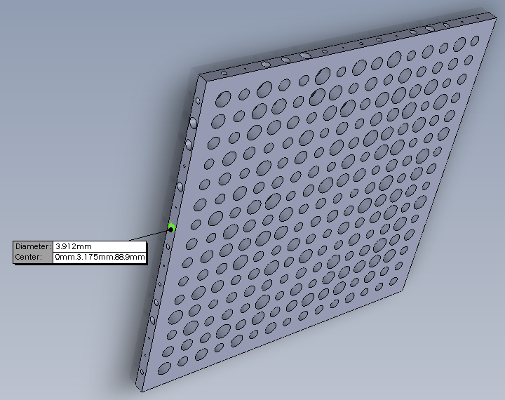
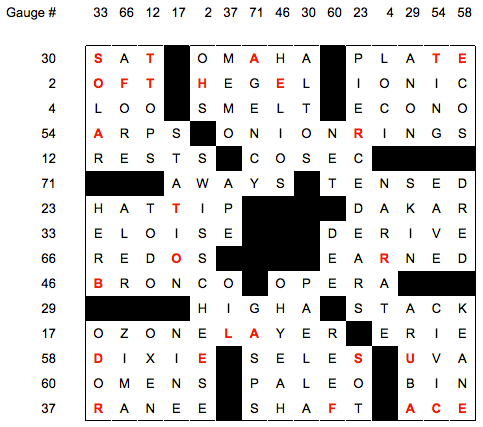

The solver opens this puzzle and sees a link to a solid model of a plate with 255 holes in it of various sizes and a numbered list of clues. The puzzle title, Hole Wizard, refers to the feature in Solidworks that automatically makes holes of varying sizes. The solid model can be opened in Solidworks, the free Solidworks eDrawings Viewer, or pretty much any CAD program.
Every hole in the part is a size found in a machinist's index of standard imperial drill sizes. The drills are ordered and indexed in numbers and letters from the smallest (#99) to the largest (Z). Measuring every hole on the model and comparing the hole sizes to a machinist's drill chart will show that each of the holes in the 15x15 grid (on what we'll call the xy-plane) are letter drills. The grid appears to be total nonsense but is needed later in the puzzle. The holes on the xz- and yz-planes are all number drills.

A hole with diameter 3.912 mm (0.154 inches) corresponds to drill size #23.
The 15x15 letter grid, the number drills going across and down into the part, and the list of clues whose numbers match the number drills all indicate to the solver that this is actually a diagramless crossword puzzle. The corner where the edges with number drills meet is the origin (top left corner) of the grid.
The number drills give the location of a crossword answer in the grid, but only its row or column. The same number drills are used for both across and down so the solver must figure out where all the answer words go knowing only what row or column the answer could appear in but not knowing if the answer is across or down. Solving the crossword yields the following complete grid:

The theme of the crossword is of course holes and the grid even has a hole right in the middle. The random letter grid has not been used up to this point. Overlaying the grid from the solid model onto the complete crossword yields 27 matching letters (i.e. where the letter in the grid matches the gauge of the corresponding hole). These are highlighted in red in the grid above. Reading the matching letters in order (across, then down) we get the clue phrase STATE OF THE ART OR BLADE SURFACE which yields the puzzle answer, and something you need to drill holes into a part: CUTTING EDGE.